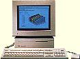

IISiのその後について

このIISiは数年前に、ジャンク屋で見つけ、買ったものですが、今までに １度も故障していませんでした。２００１年の１０月に、NuBusボードの点検
のため、立ち上げようとしたとき、電源を入れても、すぐに切れてしまう状態 になってしまいました。ロジックボードが不良のようで、当分棚上げかと考え
ていたのですが、１０月下旬に、秋葉原に、ノートパソコンのメモリーを、 買いに行ったとき、日米商事の店先に、IISiのものらしいロジックボードが、
２００円で置いてあるのを見つけました。これは、IISiを生き返らせろという 意味かと思い、迷わず購入しました。１MBのSIMM４枚とFD、HDへのコネクタ
ケーブルまで付いています。家に持ち帰り、ロジックボードを交換すると、 見事に生き返りました。ついでにラジオデパートの地下の、秋葉原エレクトリック
パーツで５００円で購入した、NuBus用のアダプタを取り付け（IISi専用の もので、これがないと拡張ボードが取り付けられない。また、このアダプタ
には68030のFPU68882が付いている。）、これまたジャンクのビデオカード GrandVimage21iを取り付け、1152x870の大画面を表示できるようにしました。
IISiのその後のその後について
２００１年１１月に、壊れてしまったロジックボードを、クロックアップ するには、どの発振器を取り替えればいいのいかな、と考えながら、何気なく
見ていると、CPU68030の足が１本曲がって、隣の足に触っていることに気が 付きました。もしかすると、これが原因で動かなくなったのかと思い、
曲がった足をカッターナイフの刃で修正し、元のようにケースに収め電源を 入れるとMACの起動音が鳴って、見事に立ち上がりました。IISiのロジック
ボードの、予備が１枚できてしまったのです。68030の足は柔らかく、大きな 部品をぶつけたりすると、曲がってしまいます。以前動かないIICiを買った
ことがあるのですが、見ると68030の足に何かをぶつけたようで、何本もの 足が、グニャリと曲がっていました。丁寧に足を修正し、使用する事ができ、
別な故障でだめになるまで、しばらくの間、生きていたのを覚えています。
IISiのクロックアップ ですが、水晶発振器が金属ケースに入っているので、 Quadraでやったように、発信器の足に、直に別の発信器を半田付けすること
ができないので、既設の40MHzの発信器を取り外し、そこに50MHzくらいの 発信器を取り付けます。ロジックボードを壊さないように、気をつけて作業
します。50MHzの発信器は、壊れたIICiから取りましたが、この時に取り外し の練習ができました。電動式の半田吸い取り器があれば、楽だと思います。
ちょっと、ほねがおれましたが、CPU25MHzの、IISiができあがりました。 クロックスピードの測定は、フリーウエアのクロコメータを使っています。
68Kマッキントッシュのページに戻る